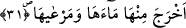

kat olarak yaratıp düzenlemiş, ardından ise yeryüzünü döşemiştir.
el-İrşad’da denilir ki: Yeryüzü anlamına gelen “arz” kelimesi gizli bir fiil ile
mansubtur. Bunun hangi fiil olduğunu âyet metninde geçen “dehâ” fiili tefsir etmektedir.
Aynı âyette yer alan “zâlike/bu” kelimesine gelince; bu kelime ile yukarda geçen
göklerin binâ edilmesine, yükseltilmesine, düzene konulmasına ve onun dışındaki
şeylere işâret olunmaktadır. Yoksa bununla “yer” kelimesinin bizzat kendisine işâret
olunmamaktadır. Buna göre âyetin mânâsı; “Allah göğü binâ ettikten, yükseltip düzene
koyduktan sonra yeryüzünü yaydı” demektir. Bu mânâya göre yeryüzünün yaratılması ve
yayılması gökten önce olmuş olmaktadır. Bu son takdire göre âyetteki “ba’de/sonra”
ifâdesiyle ortaya çıkan yeryüzünün yayılıp döşenmesinin sonralığı -yoktan var ediliş
açısından değil- arapların ve arap olmayanların âdetleri olduğu üzere anılmaktadır.
Dolayısıyla bu sâdece ifâdede yer almakta olan bir “sonralık” olmuş olmaktadır. Çünkü
âlimlerin ekserisinin görüş birliği hâlinde ifâdelerine göre önce yeryüzü ve içindekiler
yaratılmış sonra gökyüzü ve içindekiler yaratılmıştır.
Bu âyette yeryüzü anlamına gelen “arz” kelimesinin öne alınması bir kasr ifâde
etmediği gibi “sonralık” da yoktan var edilişte bir sonralık olduğuna işâret
etmemektedir. Çünkü yukarda ifâde ettiğimiz üzere “arz” kelimesi, kendisinden önce
geçen gizli bir fiil ile mansubtur ve bu fiil tefsir şartları gereğince hazfedilmiştir. Yoksa
kendisinden sonra zikredilen fiilden dolayı mansub değildir.
Âyetin akışı içinde yeryüzünün zikrinin sona bırakılması, ya göğün hallerine nisbetle
yeryüzünün Allah Teâlâ’nın kudret-i kahiresine delalet etmesi bakımından daha etkili
olmasındandır. Ya da bunun hitab ettiği kişiyi delilsiz bırakarak konuşmaktan âciz
bırakmaya daha etkili olduğuna işâret etmek içindir. Çünkü yeryüzündeki şeylerden elde
edilen menfaatler daha çoktur ve insanların maslahatlarının yeryüzüne bağlanması daha
belirgindir. Ayrıca yeryüzünün ayrıntılarıyla öğrenilmesi daha mükemmeldir. Bu
makamla ilgili olarak söylenecek başka sözler daha önce Ha-mim es-Secde sûresinde
geçmişti.
31. Yerden suyunu ve otunu çıkardı.
Pınarlar fışkırtmak ve nehirler akıtmak sûretiyle “yerden suyunu ve otunu çıkardı.”
Bu âyette geçen “mer’â” kelimesi riâ yâni ot anlamında kullanılmıştır. Mer’â kelimesi
aslında otlak anlamındadır.
Suyun ve otun yeryüzüne nisbet edilerek “yerin suyu ve yerin otu” denmesi, suyun ve
otun yeryüzünden çıkmasından dolayıdır. Bu cümlenin başında herhangi bir atıf harfinin
bulunmaması, cümlenin yeryüzünün döşenmesi ve yayılmasının tefsiri mâhiyetinde
olmasından ve yerin döşenmesini tamamlama kabilinden olmasından dolayıdır. Çünkü